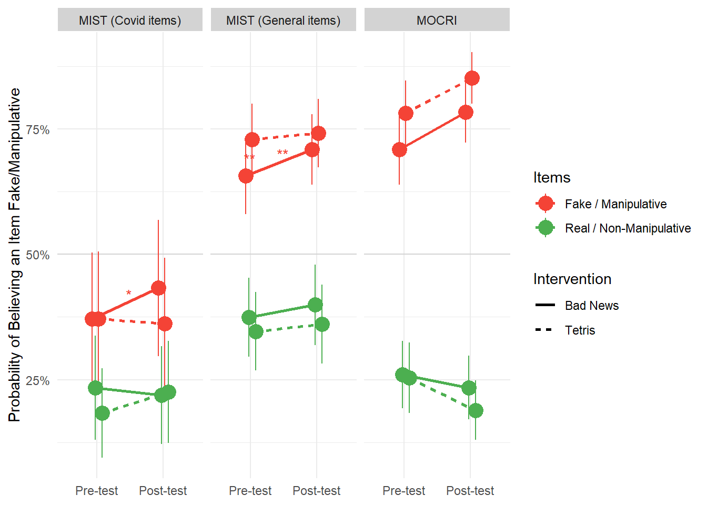
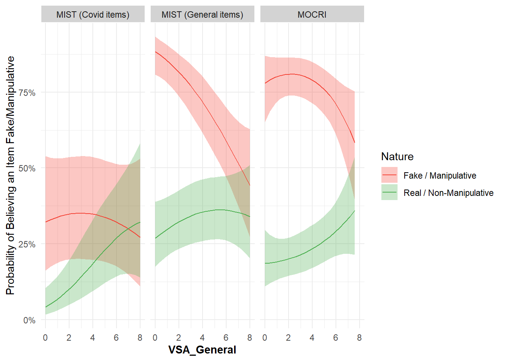
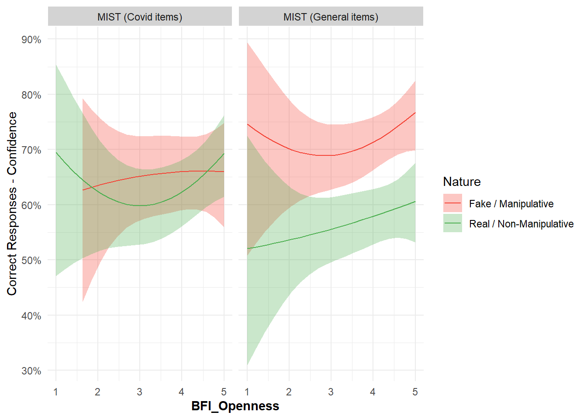
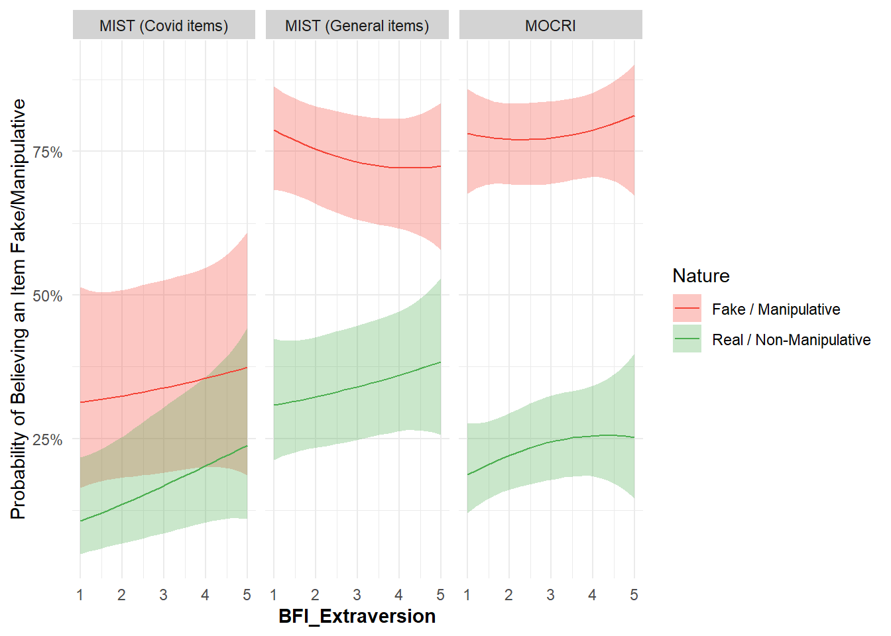
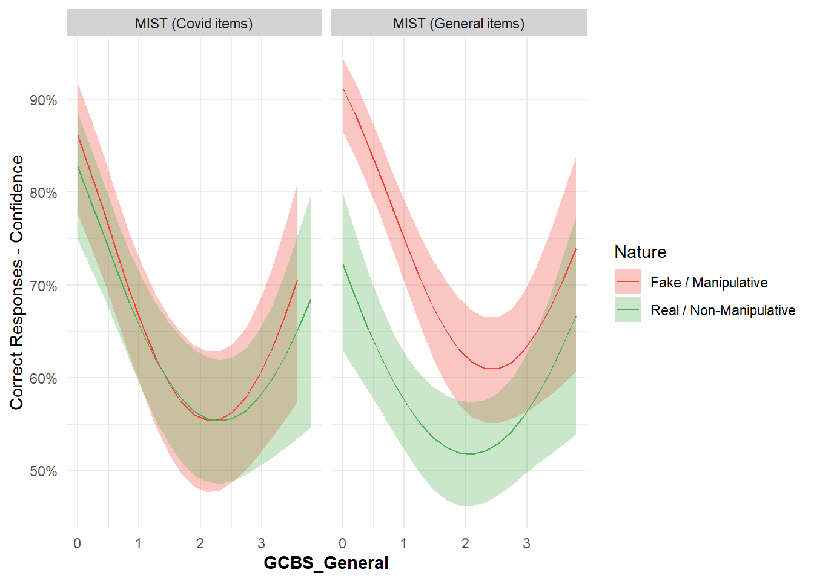

Code
library(tidyverse)
library(easystats)
library(patchwork)
library(ggside)
library(glmmTMB)library(tidyverse)
library(easystats)
library(patchwork)
library(ggside)
library(glmmTMB)df <- read.csv("../data/data_participants.csv") |>
mutate(
# Political_Affiliation = fct_relevel(Political_Affiliation, "Green", "Labour", "Democrat", "None", "None or Independent", "Liberal-Democrats", "Conservative", "Republican"),
Political_Ideology = fct_relevel(Political_Ideology, "Extremely Liberal", "Liberal", "Slightly Liberal", "Moderate", "Don't Know", "Slightly Conservative", "Conservative", "Extremely Conservative"))
dfmist <- read.csv("../data/data_mist.csv") |>
mutate(Condition = ifelse(Condition == "Pretest", "Pre-test", "Post-test"),
Condition = fct_relevel(Condition, "Pre-test", "Post-test"),
Intervention = ifelse(Intervention == "Tetris", "Tetris", "Bad News"),
Intervention = fct_relevel(Intervention, "Bad News", "Tetris"),
Topic = ifelse(Topic == "Covid", "Covid items", "General items"),
Topic = fct_relevel(Topic, "General items", "Covid items"),
Belief = ifelse(Realness > 0.5, 0, 1),
Fakeness = 1 - Realness,
Confidence = abs(datawizard::rescale(Fakeness, to = c(-1, 1), range = c(0, 1)))) |>
full_join(select(df, Participant, Sample, Political_IdeologyNumeric, starts_with("BFI"), starts_with("GCBS"), starts_with("VSA")), by = "Participant") |>
filter(Sample == "USA")
dfmocri <- read.csv("../data/data_mocri.csv") |>
full_join(select(df, Participant, Sample, Intervention, Political_IdeologyNumeric, starts_with("BFI"), starts_with("GCBS"), starts_with("VSA")), by = "Participant") |>
mutate(Condition = fct_relevel(Condition, "Pre-test", "Post-test"),
Intervention = ifelse(Intervention == "Tetris", "Tetris", "Bad News"),
Intervention = fct_relevel(Intervention, "Bad News", "Tetris")) |>
filter(Sample == "USA")dfmist |>
ggplot(aes(x=Realness)) +
geom_histogram(aes(fill=Nature), alpha=0.6, position="identity", bins=30)m1 <- glmmTMB(
Belief ~ Intervention * Condition * Nature * Topic + (Condition * Nature|Participant) + (1|Item ),
data = dfmist,
family = "binomial"
)
means1 <- estimate_means(m1, by=c("Nature", "Condition", "Intervention", "Topic"))
means1$Topic <- paste0("MIST (", means1$Topic, ")")
estimate_contrasts(m1, contrast="Condition", by=c("Topic", "Nature", "Intervention"), p_adjust="holm")Marginal Contrasts Analysis
Level1 | Level2 | Topic | Nature | Intervention | Difference
-------------------------------------------------------------------------
Post-test | Pre-test | General items | Fake | Bad News | 0.05
Post-test | Pre-test | Covid items | Fake | Bad News | 0.06
Post-test | Pre-test | General items | Real | Bad News | 0.02
Post-test | Pre-test | Covid items | Real | Bad News | -0.01
Post-test | Pre-test | General items | Fake | Tetris | 0.01
Post-test | Pre-test | Covid items | Fake | Tetris | -9.56e-03
Post-test | Pre-test | General items | Real | Tetris | 0.01
Post-test | Pre-test | Covid items | Real | Tetris | 0.04
Level1 | SE | 95% CI | z | p
-------------------------------------------------
Post-test | 0.01 | [ 0.03, 0.08] | 3.81 | 0.001
Post-test | 0.02 | [ 0.02, 0.11] | 2.70 | 0.049
Post-test | 0.01 | [ 0.00, 0.05] | 1.71 | 0.434
Post-test | 0.02 | [-0.05, 0.02] | -0.77 | > .999
Post-test | 0.01 | [-0.02, 0.04] | 0.81 | > .999
Post-test | 0.03 | [-0.06, 0.04] | -0.36 | > .999
Post-test | 0.02 | [-0.02, 0.05] | 0.87 | > .999
Post-test | 0.02 | [ 0.00, 0.09] | 1.93 | 0.325
Variable predicted: Belief
Predictors contrasted: Condition
Predictors averaged: Participant, Item
p-value adjustment method: Holm (1979)
Contrasts are on the response-scale (in %-points).estimate_contrasts(m1, contrast="Intervention", by=c("Topic", "Nature", "Condition='Pre-test'"), p_adjust="holm")Marginal Contrasts Analysis
Level1 | Level2 | Topic | Nature | Condition | Difference | SE
--------------------------------------------------------------------------
Tetris | Bad News | General items | Fake | Pre-test | 0.07 | 0.02
Tetris | Bad News | Covid items | Fake | Pre-test | -4.77e-06 | 0.03
Tetris | Bad News | General items | Real | Pre-test | -0.03 | 0.02
Tetris | Bad News | Covid items | Real | Pre-test | -0.05 | 0.02
Level1 | 95% CI | z | p
--------------------------------------------
Tetris | [ 0.03, 0.12] | 3.14 | 0.007
Tetris | [-0.06, 0.06] | -1.52e-04 | > .999
Tetris | [-0.07, 0.01] | -1.29 | 0.397
Tetris | [-0.10, 0.00] | -2.12 | 0.103
Variable predicted: Belief
Predictors contrasted: Intervention
Predictors averaged: Participant, Item
p-value adjustment method: Holm (1979)
Contrasts are on the response-scale (in %-points).dfsub <- estimate_grouplevel(m1) Cannot extract confidence intervals for random variance parameters from
models with more than one grouping factor.left_join(dfsub, select(df, Level=Participant, Intervention), by = "Level") |>
filter(Intervention == "BadNewsGame") |>
performance::performance_dvour() Group Parameter D_vour
1 Participant (Intercept) 0.8162642
2 Participant ConditionPost-test 0.4391531
3 Participant ConditionPost-test:NatureReal 0.1215949
4 Participant NatureReal 0.7188516# dfsub |>
# filter(Group != "Item", Parameter %in% c("(Intercept)", "ConditionPre-test:NatureReal")) # m <- glmmTMB(
# Fakeness ~ Intervention / Condition / Nature * Topic + (Nature / Condition|Participant) + (1|Item ),
# data = dfmist,
# family = ordbeta()
# )
#
# means <- estimate_means(m, by=c("Nature", "Condition", "Intervention", "Topic"))
# p_mist2 <- means |>
# ggplot(aes(x=Condition, y=Proportion, color=Nature, group=interaction(Nature, Intervention))) +
# geom_line(aes(linetype=Intervention), position=position_dodge2(width=0.2)) +
# geom_pointrange(aes(ymin=CI_low, ymax=CI_high), position=position_dodge2(width=0.2)) +
# facet_wrap(~Topic) +
# scale_color_manual(values=c("Fake"="#F44336", "Real"="#4CAF50")) +
# scale_y_continuous(labels=scales::percent) +
# theme_minimal() +
# labs(y="Belief\nReal vs. Fake", title = "MIST") +
# theme(axis.title.x=element_blank(),
# strip.background = element_rect(fill="lightgrey", color="white"))
# p_mist2
#
# # p_mist1 / p_mist2
#
# estimate_contrasts(m, contrast="Condition", by=c("Topic", "Nature", "Intervention"), p_adjust="holm")
# estimate_contrasts(m, contrast="Intervention", by=c("Topic", "Nature", "Condition='Pre-test'"), p_adjust="holm")dfmist |>
ggplot(aes(x=Confidence)) +
geom_histogram(aes(fill=Nature), alpha=0.6, position="identity", bins=30)m2 <- glmmTMB(
Confidence ~ Intervention * Condition * Nature * Topic + (Nature * Condition|Participant) + (1|Item ),
data = filter(dfmist, Correct == 1),
family = ordbeta()
)
means2 <- estimate_means(m2, by=c("Nature", "Condition", "Intervention", "Topic"))
means2$Topic <- paste0("MIST (", means2$Topic, ")")
p_mist2 <- means2 |>
ggplot(aes(x=Condition, y=Proportion, color=Nature, group=interaction(Nature, Intervention))) +
geom_line(aes(linetype=Intervention), position=position_dodge2(width=0.2)) +
geom_pointrange(aes(ymin=CI_low, ymax=CI_high), position=position_dodge2(width=0.2)) +
facet_wrap(~Topic) +
scale_color_manual(values=c("Fake"="#F44336", "Real"="#4CAF50")) +
scale_y_continuous(labels=scales::percent) +
theme_minimal() +
labs(y="Correct Responses - Confidence", color="Items") +
theme(axis.title.x=element_blank(),
strip.background = element_rect(fill="lightgrey", color="white"))
p_mist2
#
# # p_mist1 / p_mist2
#
estimate_contrasts(m2, contrast="Condition", by=c("Topic", "Nature", "Intervention"), p_adjust="holm")Marginal Contrasts Analysis
Level1 | Level2 | Topic | Nature | Intervention | Difference
-------------------------------------------------------------------------
Post-test | Pre-test | General items | Fake | Bad News | 0.03
Post-test | Pre-test | Covid items | Fake | Bad News | 0.05
Post-test | Pre-test | General items | Real | Bad News | 6.69e-03
Post-test | Pre-test | Covid items | Real | Bad News | 1.15e-03
Post-test | Pre-test | General items | Fake | Tetris | 0.02
Post-test | Pre-test | Covid items | Fake | Tetris | 0.02
Post-test | Pre-test | General items | Real | Tetris | -0.03
Post-test | Pre-test | Covid items | Real | Tetris | -8.72e-03
Level1 | SE | 95% CI | z | p
--------------------------------------------------
Post-test | 0.01 | [ 0.01, 0.06] | 2.41 | 0.111
Post-test | 0.02 | [ 0.01, 0.09] | 2.55 | 0.085
Post-test | 0.01 | [-0.02, 0.03] | 0.56 | > .999
Post-test | 0.01 | [-0.03, 0.03] | 0.08 | > .999
Post-test | 0.02 | [-0.01, 0.05] | 1.00 | > .999
Post-test | 0.02 | [-0.02, 0.07] | 1.02 | > .999
Post-test | 0.01 | [-0.05, 0.00] | -1.97 | 0.296
Post-test | 0.02 | [-0.04, 0.02] | -0.53 | > .999
Variable predicted: Confidence
Predictors contrasted: Condition
Predictors averaged: Participant, Item
p-value adjustment method: Holm (1979)
Contrasts are on the response-scale (in %-points).estimate_contrasts(m2, contrast="Intervention", by=c("Topic", "Nature", "Condition='Pre-test'"), p_adjust="holm")Marginal Contrasts Analysis
Level1 | Level2 | Topic | Nature | Condition | Difference | SE
--------------------------------------------------------------------------
Tetris | Bad News | General items | Fake | Pre-test | -7.97e-03 | 0.04
Tetris | Bad News | Covid items | Fake | Pre-test | -0.03 | 0.04
Tetris | Bad News | General items | Real | Pre-test | -0.02 | 0.03
Tetris | Bad News | Covid items | Real | Pre-test | -0.02 | 0.03
Level1 | 95% CI | z | p
---------------------------------------
Tetris | [-0.08, 0.06] | -0.23 | > .999
Tetris | [-0.11, 0.05] | -0.68 | > .999
Tetris | [-0.09, 0.04] | -0.64 | > .999
Tetris | [-0.08, 0.05] | -0.50 | > .999
Variable predicted: Confidence
Predictors contrasted: Intervention
Predictors averaged: Participant, Item
p-value adjustment method: Holm (1979)
Contrasts are on the response-scale (in %-points).m3 <- glmmTMB(
Manipulative ~ Intervention * Nature * Condition + (Nature | Participant) + (1|Item ),
data = dfmocri,
family = "binomial"
)
means3 <- estimate_means(m3, by=c("Nature", "Condition", "Intervention"))
means3$Topic <- "MOCRI"
estimate_contrasts(m3, contrast="Condition", by=c("Nature", "Intervention"), p_adjust="holm")Marginal Contrasts Analysis
Level1 | Level2 | Nature | Intervention | Difference | SE
-------------------------------------------------------------------------
Post-test | Pre-test | Manipulative | Bad News | 0.07 | 0.04
Post-test | Pre-test | NonManipulative | Bad News | -0.03 | 0.04
Post-test | Pre-test | Manipulative | Tetris | 0.07 | 0.04
Post-test | Pre-test | NonManipulative | Tetris | -0.06 | 0.04
Level1 | 95% CI | z | p
-----------------------------------------
Post-test | [-0.01, 0.15] | 1.82 | 0.206
Post-test | [-0.11, 0.06] | -0.60 | 0.552
Post-test | [ 0.00, 0.14] | 2.01 | 0.179
Post-test | [-0.15, 0.02] | -1.54 | 0.245
Variable predicted: Manipulative
Predictors contrasted: Condition
Predictors averaged: Participant, Item
p-value adjustment method: Holm (1979)
Contrasts are on the response-scale (in %-points).estimate_contrasts(m3, contrast="Intervention", by=c("Nature", "Condition='Pre-test'"), p_adjust="holm")Marginal Contrasts Analysis
Level1 | Level2 | Nature | Condition | Difference | SE
-------------------------------------------------------------------
Tetris | Bad News | Manipulative | Pre-test | 0.07 | 0.03
Tetris | Bad News | NonManipulative | Pre-test | -6.08e-03 | 0.03
Level1 | 95% CI | z | p
--------------------------------------
Tetris | [ 0.01, 0.14] | 2.20 | 0.055
Tetris | [-0.06, 0.05] | -0.21 | 0.836
Variable predicted: Manipulative
Predictors contrasted: Intervention
Predictors averaged: Participant, Item
p-value adjustment method: Holm (1979)
Contrasts are on the response-scale (in %-points).p1 <- rbind(means1, means3) |>
ggplot(aes(x=Condition, y=Probability, color=Nature, group=interaction(Nature, Intervention))) +
geom_hline(yintercept=0.5, color="lightgrey") +
geom_line(aes(linetype=Intervention), position=position_dodge2(width=0.2), linewidth = 1) +
geom_pointrange(aes(ymin=CI_low, ymax=CI_high), position=position_dodge2(width=0.2), size = 1) +
scale_color_manual(values=c("Fake"="#F44336", "Real"="#4CAF50", "Manipulative"="#F44336", "NonManipulative"="#4CAF50"),
breaks = c("Fake", "Real"),
labels = c("Fake / Manipulative", "Real / Non-Manipulative")) +
scale_y_continuous(labels=scales::percent) +
theme_minimal() +
labs(y="Probability of Believing an Item Fake/Manipulative", color="Items") +
facet_wrap(~Topic) +
theme(strip.background = element_rect(fill="lightgrey", color="white"),
axis.title.x=element_blank()) +
geom_text(data = rbind(
data.frame(x = 1.48, y = 0.42, Nature="Fake", Intervention="Bad News", Topic = "MIST (Covid items)", label = c("*")),
data.frame(x = 1.48, y = 0.7, Nature="Fake", Intervention="Bad News", Topic = "MIST (General items)", label = c("**")),
data.frame(x = 0.98, y = 0.69, Nature="Fake", Intervention="Bad News", Topic = "MIST (General items)", label = c("**")),
data.frame(x = 0.98, y = 0.75, Nature="Fake", Intervention="Bad News", Topic = "MOCRI", label = c(""))
),
aes(x = x, y = y, label = label)
)
p1
make_covariatemodel <- function(covariate="Political_IdeologyNumeric") {
# MIST ---------------------------------------------------------------------
f <- paste0("Belief ~ Nature / poly(",
covariate,
", 2) * Topic + (Nature|Participant) + (1|Item)")
m <- glmmTMB(
as.formula(f),
data = dfmist[!is.na(dfmist[[covariate]]) & dfmist$Condition == "Pre-test",],
family = "binomial"
)
# m <- glmmTMB(
# Fakeness ~ Nature / poly(Political_IdeologyNumeric, 2) * Topic + (Nature|Participant) + (1|Item ),
# data = filter(dfmist, Condition == "Pre-test", !is.na(Political_IdeologyNumeric)),
# family = ordbeta()
# )
# parameters::parameters(m)
pred <- estimate_relation(m, by=c("Nature", covariate, "Topic"), length = 20)
pred$x <- pred[[covariate]]
pred$Topic <- paste0("MIST (", pred$Topic, ")")
# Benchmark
trends1 <- estimate_slopes(m, trend=covariate, by=c(covariate, "Nature", "Topic"), length=5, backend = "emmeans")
# Confidence ----------------------------------------------------------------
f <- paste0("Confidence ~ Nature / poly(",
covariate,
", 2) * Topic + (Nature|Participant) + (1|Item)")
m <- glmmTMB(
as.formula(f),
data = dfmist[!is.na(dfmist[[covariate]]) & dfmist$Condition == "Pre-test" & dfmist$Correct == 1,],
family = ordbeta()
)
pred2 <- estimate_relation(m, by=c("Nature", covariate, "Topic"), length = 20)
pred2$x <- pred2[[covariate]]
pred2$Topic <- paste0("MIST (", pred2$Topic, ")")
p_conf <- pred2 |>
ggplot(aes(x=x, y=Predicted)) +
geom_ribbon(aes(ymin=CI_low, ymax=CI_high, fill=Nature), alpha=0.3) +
geom_line(aes(color=Nature)) +
scale_color_manual(values=c("Fake"="#F44336", "Real"="#4CAF50", "Manipulative"="#F44336", "NonManipulative"="#4CAF50"),
breaks = c("Fake", "Real"),
labels = c("Fake / Manipulative", "Real / Non-Manipulative")) +
scale_fill_manual(values=c("Fake"="#F44336", "Real"="#4CAF50", "Manipulative"="#F44336", "NonManipulative"="#4CAF50"),
breaks = c("Fake", "Real"),
labels = c("Fake / Manipulative", "Real / Non-Manipulative")) +
scale_y_continuous(labels=scales::percent) +
theme_minimal() +
facet_wrap(~Topic) +
labs(x = covariate, y="Correct Responses - Confidence") +
theme(strip.background = element_rect(fill="lightgrey", color="white"),
axis.title.x = element_text(face="bold"))
trends_conf <- estimate_slopes(m, trend=covariate, by=c(covariate, "Nature", "Topic"), length=5, backend="emmeans")
# MOCRI --------------------------------------------------------------------
f <- paste0("Manipulative ~ Nature / poly(",
covariate,
", 2) + (Nature|Participant) + (1|Item)")
m <- glmmTMB(
as.formula(f),
data = dfmocri[!is.na(dfmocri[[covariate]]) & dfmocri$Condition == "Pre-test",],
family = "binomial"
)
pred3 <- estimate_relation(m, by=c("Nature", covariate), length = 20)
pred3$x <- pred3[[covariate]]
pred3$Topic <- "MOCRI"
p <- rbind(pred, pred3) |>
ggplot(aes(x=x, y=Predicted)) +
geom_ribbon(aes(ymin=CI_low, ymax=CI_high, fill=Nature), alpha=0.3) +
geom_line(aes(color=Nature)) +
scale_color_manual(values=c("Fake"="#F44336", "Real"="#4CAF50", "Manipulative"="#F44336", "NonManipulative"="#4CAF50"),
breaks = c("Fake", "Real"),
labels = c("Fake / Manipulative", "Real / Non-Manipulative")) +
scale_fill_manual(values=c("Fake"="#F44336", "Real"="#4CAF50", "Manipulative"="#F44336", "NonManipulative"="#4CAF50"),
breaks = c("Fake", "Real"),
labels = c("Fake / Manipulative", "Real / Non-Manipulative")) +
scale_y_continuous(labels=scales::percent) +
theme_minimal() +
facet_wrap(~Topic) +
labs(x = covariate, y = "Probability of Believing an Item Fake/Manipulative") +
theme(strip.background = element_rect(fill="lightgrey", color="white"),
axis.title.x = element_text(face="bold"))
trends2 <- estimate_slopes(m, trend=covariate, by=c(covariate, "Nature"), length=5, backend="emmeans")
trends2$Topic <- "MOCRI"
list(p=p, trends=rbind(trends1, trends2), p_conf = p_conf, trends_conf=trends_conf)
}
rez_ideology <- make_covariatemodel(covariate="Political_IdeologyNumeric")
rez_ideology$p
filter(rez_ideology$trends, p < .05)Estimated Marginal Effects
Political_IdeologyNumeric | Nature | Topic | Slope | SE
--------------------------------------------------------------------------
2.50 | Fake | General items | -0.19 | 0.07
4.00 | Fake | General items | -0.25 | 0.04
5.50 | Fake | General items | -0.31 | 0.08
7.00 | Fake | General items | -0.37 | 0.15
4.00 | Real | General items | 0.08 | 0.03
4.00 | Real | Covid items | 0.26 | 0.05
5.50 | Real | Covid items | 0.44 | 0.10
7.00 | Real | Covid items | 0.63 | 0.18
5.50 | NonManipulative | MOCRI | 0.21 | 0.11
7.00 | NonManipulative | MOCRI | 0.38 | 0.18
4.00 | Manipulative | MOCRI | -0.17 | 0.05
5.50 | Manipulative | MOCRI | -0.37 | 0.11
7.00 | Manipulative | MOCRI | -0.57 | 0.20
Political_IdeologyNumeric | 95% CI | z | df | p
-----------------------------------------------------------------
2.50 | [-0.33, -0.05] | -2.64 | Inf | 0.008
4.00 | [-0.33, -0.17] | -6.31 | Inf | < .001
5.50 | [-0.47, -0.14] | -3.65 | Inf | < .001
7.00 | [-0.66, -0.08] | -2.48 | Inf | 0.013
4.00 | [ 0.01, 0.15] | 2.26 | Inf | 0.024
4.00 | [ 0.16, 0.35] | 5.17 | Inf | < .001
5.50 | [ 0.24, 0.65] | 4.28 | Inf | < .001
7.00 | [ 0.27, 0.99] | 3.43 | Inf | < .001
5.50 | [ 0.00, 0.42] | 1.98 | Inf | 0.047
7.00 | [ 0.02, 0.75] | 2.07 | Inf | 0.038
4.00 | [-0.27, -0.07] | -3.29 | Inf | < .001
5.50 | [-0.59, -0.15] | -3.30 | Inf | < .001
7.00 | [-0.95, -0.18] | -2.90 | Inf | 0.004
Marginal effects estimated for Political_IdeologyNumericrez_ideology$p_conf
filter(rez_ideology$trends_conf, p < .05)Estimated Marginal Effects
Political_IdeologyNumeric | Nature | Topic | Slope | SE
-----------------------------------------------------------------
1.00 | Real | General items | -0.31 | 0.15
5.50 | Real | General items | 0.26 | 0.10
7.00 | Real | General items | 0.45 | 0.17
2.50 | Fake | General items | -0.18 | 0.09
1.00 | Real | Covid items | -0.42 | 0.15
2.50 | Real | Covid items | -0.20 | 0.08
5.50 | Real | Covid items | 0.24 | 0.10
7.00 | Real | Covid items | 0.46 | 0.18
7.00 | Fake | Covid items | 0.43 | 0.22
Political_IdeologyNumeric | 95% CI | z | df | p
----------------------------------------------------------------
1.00 | [-0.60, -0.02] | -2.10 | Inf | 0.036
5.50 | [ 0.07, 0.45] | 2.68 | Inf | 0.007
7.00 | [ 0.12, 0.77] | 2.67 | Inf | 0.008
2.50 | [-0.36, 0.00] | -1.99 | Inf | 0.047
1.00 | [-0.72, -0.11] | -2.68 | Inf | 0.007
2.50 | [-0.36, -0.04] | -2.40 | Inf | 0.016
5.50 | [ 0.04, 0.44] | 2.37 | Inf | 0.018
7.00 | [ 0.11, 0.81] | 2.60 | Inf | 0.009
7.00 | [ 0.01, 0.86] | 1.99 | Inf | 0.047
Marginal effects estimated for Political_IdeologyNumericrez_vsa <- make_covariatemodel(covariate="VSA_General")
rez_vsa$prez_vsa$trends |>
filter(p < .05)Estimated Marginal Effects
VSA_General | Nature | Topic | Slope | SE | 95% CI
-----------------------------------------------------------------------------
0.00 | Fake | General items | -0.27 | 0.13 | [-0.52, -0.02]
2.00 | Fake | General items | -0.28 | 0.06 | [-0.40, -0.15]
4.00 | Fake | General items | -0.28 | 0.04 | [-0.36, -0.21]
6.00 | Fake | General items | -0.29 | 0.09 | [-0.46, -0.12]
0.00 | Real | Covid items | 0.52 | 0.18 | [ 0.17, 0.88]
2.00 | Real | Covid items | 0.41 | 0.10 | [ 0.22, 0.60]
4.00 | Real | Covid items | 0.30 | 0.05 | [ 0.20, 0.39]
4.00 | NonManipulative | MOCRI | 0.12 | 0.05 | [ 0.03, 0.22]
4.00 | Manipulative | MOCRI | -0.14 | 0.05 | [-0.24, -0.04]
6.00 | Manipulative | MOCRI | -0.29 | 0.12 | [-0.53, -0.05]
8.00 | Manipulative | MOCRI | -0.45 | 0.21 | [-0.86, -0.03]
VSA_General | z | df | p
----------------------------------
0.00 | -2.11 | Inf | 0.034
2.00 | -4.26 | Inf | < .001
4.00 | -7.47 | Inf | < .001
6.00 | -3.25 | Inf | 0.001
0.00 | 2.87 | Inf | 0.004
2.00 | 4.28 | Inf | < .001
4.00 | 5.98 | Inf | < .001
4.00 | 2.60 | Inf | 0.009
4.00 | -2.67 | Inf | 0.008
6.00 | -2.39 | Inf | 0.017
8.00 | -2.12 | Inf | 0.034
Marginal effects estimated for VSA_Generalrez_vsa$p_conf
rez_vsa$trends_conf |>
filter(p < .05)Estimated Marginal Effects
VSA_General | Nature | Topic | Slope | SE | 95% CI | z
----------------------------------------------------------------------------
0.00 | Real | General items | -0.39 | 0.14 | [-0.67, -0.11] | -2.75
2.00 | Real | General items | -0.16 | 0.07 | [-0.30, -0.02] | -2.31
6.00 | Real | General items | 0.29 | 0.10 | [ 0.09, 0.49] | 2.81
8.00 | Real | General items | 0.52 | 0.18 | [ 0.17, 0.86] | 2.92
0.00 | Fake | General items | -0.60 | 0.17 | [-0.93, -0.27] | -3.58
2.00 | Fake | General items | -0.32 | 0.08 | [-0.49, -0.16] | -3.82
8.00 | Fake | General items | 0.51 | 0.21 | [ 0.11, 0.92] | 2.48
0.00 | Real | Covid items | -0.59 | 0.15 | [-0.88, -0.29] | -3.93
2.00 | Real | Covid items | -0.28 | 0.08 | [-0.43, -0.14] | -3.78
6.00 | Real | Covid items | 0.33 | 0.11 | [ 0.11, 0.54] | 3.01
8.00 | Real | Covid items | 0.63 | 0.19 | [ 0.27, 1.00] | 3.39
0.00 | Fake | Covid items | -0.41 | 0.19 | [-0.79, -0.03] | -2.13
8.00 | Fake | Covid items | 0.51 | 0.24 | [ 0.03, 0.99] | 2.08
VSA_General | df | p
--------------------------
0.00 | Inf | 0.006
2.00 | Inf | 0.021
6.00 | Inf | 0.005
8.00 | Inf | 0.004
0.00 | Inf | < .001
2.00 | Inf | < .001
8.00 | Inf | 0.013
0.00 | Inf | < .001
2.00 | Inf | < .001
6.00 | Inf | 0.003
8.00 | Inf | < .001
0.00 | Inf | 0.033
8.00 | Inf | 0.037
Marginal effects estimated for VSA_Generalrez_neuro <- make_covariatemodel(covariate="BFI_Neuroticism")
rez_neuro$p
rez_neuro$trends |>
filter(p < .05)Estimated Marginal Effects
BFI_Neuroticism | Nature | Topic | Slope | SE | 95% CI
------------------------------------------------------------------------------
4.00 | Fake | General items | 0.27 | 0.13 | [ 0.02, 0.52]
5.00 | Fake | General items | 0.48 | 0.22 | [ 0.05, 0.91]
1.00 | Real | General items | -0.35 | 0.16 | [-0.66, -0.04]
2.00 | Real | General items | -0.20 | 0.08 | [-0.37, -0.04]
3.00 | Manipulative | MOCRI | 0.17 | 0.08 | [ 0.01, 0.33]
4.00 | Manipulative | MOCRI | 0.44 | 0.17 | [ 0.10, 0.78]
5.00 | Manipulative | MOCRI | 0.70 | 0.29 | [ 0.13, 1.28]
BFI_Neuroticism | z | df | p
-------------------------------------
4.00 | 2.14 | Inf | 0.033
5.00 | 2.20 | Inf | 0.028
1.00 | -2.21 | Inf | 0.027
2.00 | -2.45 | Inf | 0.014
3.00 | 2.15 | Inf | 0.032
4.00 | 2.54 | Inf | 0.011
5.00 | 2.39 | Inf | 0.017
Marginal effects estimated for BFI_Neuroticismrez_neuro$p_confrez_neuro$trends_conf |>
filter(p < .05)Estimated Marginal Effects
BFI_Neuroticism | Nature | Topic | Slope | SE | 95% CI
------------------------------------------------------------------------
1.00 | Real | General items | -0.57 | 0.20 | [-0.96, -0.18]
2.00 | Real | General items | -0.34 | 0.10 | [-0.55, -0.14]
1.00 | Fake | General items | -0.88 | 0.23 | [-1.33, -0.42]
2.00 | Fake | General items | -0.45 | 0.12 | [-0.69, -0.21]
4.00 | Fake | General items | 0.41 | 0.16 | [ 0.10, 0.72]
5.00 | Fake | General items | 0.84 | 0.27 | [ 0.31, 1.37]
1.00 | Real | Covid items | -0.58 | 0.21 | [-0.99, -0.17]
2.00 | Real | Covid items | -0.30 | 0.11 | [-0.51, -0.08]
5.00 | Real | Covid items | 0.56 | 0.24 | [ 0.08, 1.03]
1.00 | Fake | Covid items | -0.76 | 0.26 | [-1.27, -0.25]
2.00 | Fake | Covid items | -0.44 | 0.14 | [-0.71, -0.17]
BFI_Neuroticism | z | df | p
--------------------------------------
1.00 | -2.89 | Inf | 0.004
2.00 | -3.25 | Inf | 0.001
1.00 | -3.76 | Inf | < .001
2.00 | -3.64 | Inf | < .001
4.00 | 2.60 | Inf | 0.009
5.00 | 3.09 | Inf | 0.002
1.00 | -2.79 | Inf | 0.005
2.00 | -2.69 | Inf | 0.007
5.00 | 2.30 | Inf | 0.022
1.00 | -2.90 | Inf | 0.004
2.00 | -3.21 | Inf | 0.001
Marginal effects estimated for BFI_Neuroticismrez_consc <- make_covariatemodel(covariate="BFI_Conscientiousness")
rez_consc$p
rez_consc$trends |>
filter(p < .05)Estimated Marginal Effects
BFI_Conscientiousness | Nature | Topic | Slope | SE | 95% CI
------------------------------------------------------------------------------
5.00 | Fake | General items | -0.39 | 0.19 | [-0.77, -0.01]
4.00 | Real | General items | 0.15 | 0.08 | [ 0.00, 0.30]
4.00 | Real | Covid items | 0.33 | 0.11 | [ 0.12, 0.55]
5.00 | Real | Covid items | 0.64 | 0.24 | [ 0.16, 1.11]
BFI_Conscientiousness | z | df | p
-------------------------------------------
5.00 | -2.00 | Inf | 0.046
4.00 | 2.02 | Inf | 0.043
4.00 | 3.03 | Inf | 0.002
5.00 | 2.64 | Inf | 0.008
Marginal effects estimated for BFI_Conscientiousnessrez_consc$p_conf
rez_consc$trends_conf |>
filter(p < .05)Estimated Marginal Effects
BFI_Conscientiousness | Nature | Topic | Slope | SE | 95% CI
--------------------------------------------------------------------------
4.00 | Fake | Covid items | 0.27 | 0.13 | [0.03, 0.52]
5.00 | Fake | Covid items | 0.55 | 0.28 | [0.00, 1.10]
BFI_Conscientiousness | z | df | p
------------------------------------------
4.00 | 2.17 | Inf | 0.030
5.00 | 1.97 | Inf | 0.049
Marginal effects estimated for BFI_Conscientiousnessrez_agre <- make_covariatemodel(covariate="BFI_Agreeableness")
rez_agre$prez_agre$trends |>
filter(p < .05)Estimated Marginal Effects
BFI_Agreeableness | Nature | Topic | Slope | SE | 95% CI
--------------------------------------------------------------------------
4.00 | Real | General items | 0.22 | 0.09 | [ 0.04, 0.40]
5.00 | Real | General items | 0.41 | 0.18 | [ 0.05, 0.76]
1.00 | Real | Covid items | -0.73 | 0.34 | [-1.40, -0.06]
4.00 | Real | Covid items | 0.35 | 0.13 | [ 0.10, 0.60]
5.00 | Real | Covid items | 0.71 | 0.26 | [ 0.20, 1.22]
BFI_Agreeableness | z | df | p
---------------------------------------
4.00 | 2.41 | Inf | 0.016
5.00 | 2.25 | Inf | 0.025
1.00 | -2.13 | Inf | 0.033
4.00 | 2.69 | Inf | 0.007
5.00 | 2.74 | Inf | 0.006
Marginal effects estimated for BFI_Agreeablenessrez_agre$p_confrez_agre$trends_conf |>
filter(p < .05)Estimated Marginal Effects
BFI_Agreeableness | Nature | Topic | Slope | SE | 95% CI
--------------------------------------------------------------------------
1.00 | Real | General items | -0.80 | 0.30 | [-1.39, -0.21]
2.00 | Real | General items | -0.41 | 0.18 | [-0.76, -0.06]
4.00 | Real | General items | 0.38 | 0.12 | [ 0.15, 0.60]
5.00 | Real | General items | 0.77 | 0.23 | [ 0.32, 1.22]
1.00 | Fake | General items | -0.73 | 0.36 | [-1.43, -0.03]
4.00 | Fake | General items | 0.41 | 0.14 | [ 0.14, 0.67]
5.00 | Fake | General items | 0.79 | 0.27 | [ 0.25, 1.32]
1.00 | Real | Covid items | -0.93 | 0.32 | [-1.55, -0.30]
2.00 | Real | Covid items | -0.53 | 0.19 | [-0.90, -0.16]
4.00 | Real | Covid items | 0.26 | 0.12 | [ 0.03, 0.50]
5.00 | Real | Covid items | 0.66 | 0.24 | [ 0.19, 1.13]
4.00 | Fake | Covid items | 0.36 | 0.16 | [ 0.05, 0.66]
BFI_Agreeableness | z | df | p
----------------------------------------
1.00 | -2.66 | Inf | 0.008
2.00 | -2.27 | Inf | 0.023
4.00 | 3.28 | Inf | 0.001
5.00 | 3.36 | Inf | < .001
1.00 | -2.06 | Inf | 0.040
4.00 | 2.98 | Inf | 0.003
5.00 | 2.89 | Inf | 0.004
1.00 | -2.91 | Inf | 0.004
2.00 | -2.79 | Inf | 0.005
4.00 | 2.18 | Inf | 0.030
5.00 | 2.73 | Inf | 0.006
4.00 | 2.30 | Inf | 0.022
Marginal effects estimated for BFI_Agreeablenessrez_open <- make_covariatemodel(covariate="BFI_Openness")
rez_open$prez_open$trends |>
filter(p < .05)Estimated Marginal Effects
BFI_Openness | Nature | Topic | Slope | SE | 95% CI
---------------------------------------------------------------------------
4.00 | Fake | General items | 0.38 | 0.10 | [ 0.19, 0.56]
5.00 | Fake | General items | 0.60 | 0.20 | [ 0.22, 0.99]
1.00 | Real | General items | -0.73 | 0.28 | [-1.27, -0.19]
2.00 | Real | General items | -0.47 | 0.17 | [-0.81, -0.12]
3.00 | Real | General items | -0.20 | 0.09 | [-0.37, -0.03]
5.00 | Real | General items | 0.34 | 0.17 | [ 0.01, 0.67]
4.00 | Manipulative | MOCRI | 0.28 | 0.13 | [ 0.03, 0.53]
BFI_Openness | z | df | p
-----------------------------------
4.00 | 3.92 | Inf | < .001
5.00 | 3.09 | Inf | 0.002
1.00 | -2.66 | Inf | 0.008
2.00 | -2.66 | Inf | 0.008
3.00 | -2.27 | Inf | 0.023
5.00 | 2.03 | Inf | 0.042
4.00 | 2.23 | Inf | 0.026
Marginal effects estimated for BFI_Opennessrez_open$p_conf
# rez_open$trends_conf |>
# filter(p < .1)rez_extr <- make_covariatemodel(covariate="BFI_Extraversion")
rez_extr$p
rez_extr$trends |>
filter(p < .05)Estimated Marginal Effects
BFI_Extraversion | Nature | Topic | Slope | SE | 95% CI | z
----------------------------------------------------------------------------
2.00 | Real | Covid items | 0.27 | 0.13 | [0.00, 0.53] | 1.98
3.00 | Real | Covid items | 0.24 | 0.08 | [0.08, 0.40] | 2.99
BFI_Extraversion | df | p
------------------------------
2.00 | Inf | 0.048
3.00 | Inf | 0.003
Marginal effects estimated for BFI_Extraversionrez_extr$p_conf
# rez_extr$trends_conf |>
# filter(p < .2)rez_gcbsg <- make_covariatemodel(covariate="GCBS_General")
rez_gcbsg$p
rez_gcbsg$trends |>
filter(p < .05)Estimated Marginal Effects
GCBS_General | Nature | Topic | Slope | SE | 95% CI
------------------------------------------------------------------------------
0.00 | Fake | General items | -0.57 | 0.23 | [-1.02, -0.12]
1.00 | Fake | General items | -0.70 | 0.12 | [-0.93, -0.47]
2.00 | Fake | General items | -0.83 | 0.07 | [-0.96, -0.70]
3.00 | Fake | General items | -0.96 | 0.16 | [-1.27, -0.65]
4.00 | Fake | General items | -1.09 | 0.27 | [-1.62, -0.56]
2.00 | Real | Covid items | 0.23 | 0.09 | [ 0.05, 0.41]
2.00 | NonManipulative | MOCRI | 0.21 | 0.09 | [ 0.03, 0.39]
1.00 | Manipulative | MOCRI | -0.32 | 0.16 | [-0.64, 0.00]
2.00 | Manipulative | MOCRI | -0.44 | 0.10 | [-0.63, -0.25]
3.00 | Manipulative | MOCRI | -0.56 | 0.22 | [-1.00, -0.12]
GCBS_General | z | df | p
------------------------------------
0.00 | -2.50 | Inf | 0.012
1.00 | -5.97 | Inf | < .001
2.00 | -12.31 | Inf | < .001
3.00 | -6.15 | Inf | < .001
4.00 | -4.03 | Inf | < .001
2.00 | 2.46 | Inf | 0.014
2.00 | 2.32 | Inf | 0.020
1.00 | -1.98 | Inf | 0.047
2.00 | -4.57 | Inf | < .001
3.00 | -2.49 | Inf | 0.013
Marginal effects estimated for GCBS_Generalrez_gcbsg$p_confrez_gcbsg$trends_conf |>
filter(p < .05)Estimated Marginal Effects
GCBS_General | Nature | Topic | Slope | SE | 95% CI | z
-----------------------------------------------------------------------------
0.00 | Real | General items | -0.86 | 0.26 | [-1.37, -0.35] | -3.28
1.00 | Real | General items | -0.44 | 0.13 | [-0.70, -0.18] | -3.34
3.00 | Real | General items | 0.39 | 0.19 | [ 0.03, 0.76] | 2.11
4.00 | Real | General items | 0.81 | 0.32 | [ 0.18, 1.44] | 2.53
0.00 | Fake | General items | -1.56 | 0.29 | [-2.13, -0.98] | -5.32
1.00 | Fake | General items | -0.92 | 0.15 | [-1.21, -0.63] | -6.19
2.00 | Fake | General items | -0.27 | 0.09 | [-0.45, -0.10] | -3.06
4.00 | Fake | General items | 1.02 | 0.36 | [ 0.31, 1.72] | 2.81
0.00 | Real | Covid items | -1.17 | 0.28 | [-1.72, -0.63] | -4.24
1.00 | Real | Covid items | -0.66 | 0.14 | [-0.94, -0.39] | -4.74
4.00 | Real | Covid items | 0.86 | 0.34 | [ 0.20, 1.53] | 2.54
0.00 | Fake | Covid items | -1.48 | 0.34 | [-2.14, -0.81] | -4.37
1.00 | Fake | Covid items | -0.80 | 0.17 | [-1.14, -0.46] | -4.65
3.00 | Fake | Covid items | 0.56 | 0.24 | [ 0.09, 1.02] | 2.33
4.00 | Fake | Covid items | 1.23 | 0.41 | [ 0.43, 2.04] | 3.01
GCBS_General | df | p
---------------------------
0.00 | Inf | 0.001
1.00 | Inf | < .001
3.00 | Inf | 0.035
4.00 | Inf | 0.012
0.00 | Inf | < .001
1.00 | Inf | < .001
2.00 | Inf | 0.002
4.00 | Inf | 0.005
0.00 | Inf | < .001
1.00 | Inf | < .001
4.00 | Inf | 0.011
0.00 | Inf | < .001
1.00 | Inf | < .001
3.00 | Inf | 0.020
4.00 | Inf | 0.003
Marginal effects estimated for GCBS_Generalrez_gcbs2 <- make_covariatemodel(covariate="GCBS_GovernmentMalfeasance")
rez_gcbs2$prez_gcbs2$trends |>
filter(p < .05)Estimated Marginal Effects
GCBS_GovernmentMalfeasance | Nature | Topic | Slope | SE
------------------------------------------------------------------------
0.00 | Fake | General items | -0.54 | 0.20
1.00 | Fake | General items | -0.53 | 0.11
2.00 | Fake | General items | -0.52 | 0.06
3.00 | Fake | General items | -0.50 | 0.12
4.00 | Fake | General items | -0.49 | 0.22
2.00 | Manipulative | MOCRI | -0.27 | 0.08
GCBS_GovernmentMalfeasance | 95% CI | z | df | p
------------------------------------------------------------------
0.00 | [-0.93, -0.15] | -2.69 | Inf | 0.007
1.00 | [-0.74, -0.32] | -4.90 | Inf | < .001
2.00 | [-0.63, -0.40] | -8.74 | Inf | < .001
3.00 | [-0.75, -0.26] | -4.05 | Inf | < .001
4.00 | [-0.92, -0.07] | -2.26 | Inf | 0.024
2.00 | [-0.42, -0.11] | -3.32 | Inf | < .001
Marginal effects estimated for GCBS_GovernmentMalfeasancerez_gcbs2$p_conf
rez_gcbs2$trends_conf |>
filter(p < .05)Estimated Marginal Effects
GCBS_GovernmentMalfeasance | Nature | Topic | Slope | SE
------------------------------------------------------------------
0.00 | Real | General items | -0.61 | 0.21
1.00 | Real | General items | -0.34 | 0.11
0.00 | Fake | General items | -1.07 | 0.25
1.00 | Fake | General items | -0.65 | 0.13
2.00 | Fake | General items | -0.23 | 0.07
4.00 | Fake | General items | 0.61 | 0.28
0.00 | Real | Covid items | -0.97 | 0.23
1.00 | Real | Covid items | -0.55 | 0.12
2.00 | Real | Covid items | -0.14 | 0.07
4.00 | Real | Covid items | 0.69 | 0.26
0.00 | Fake | Covid items | -1.11 | 0.28
1.00 | Fake | Covid items | -0.63 | 0.15
4.00 | Fake | Covid items | 0.83 | 0.32
GCBS_GovernmentMalfeasance | 95% CI | z | df | p
------------------------------------------------------------------
0.00 | [-1.03, -0.19] | -2.85 | Inf | 0.004
1.00 | [-0.56, -0.12] | -2.99 | Inf | 0.003
0.00 | [-1.55, -0.59] | -4.35 | Inf | < .001
1.00 | [-0.90, -0.39] | -4.97 | Inf | < .001
2.00 | [-0.37, -0.08] | -3.07 | Inf | 0.002
4.00 | [ 0.07, 1.16] | 2.20 | Inf | 0.028
0.00 | [-1.41, -0.52] | -4.25 | Inf | < .001
1.00 | [-0.79, -0.31] | -4.56 | Inf | < .001
2.00 | [-0.27, 0.00] | -1.99 | Inf | 0.047
4.00 | [ 0.19, 1.20] | 2.70 | Inf | 0.007
0.00 | [-1.66, -0.56] | -3.96 | Inf | < .001
1.00 | [-0.92, -0.33] | -4.19 | Inf | < .001
4.00 | [ 0.21, 1.44] | 2.62 | Inf | 0.009
Marginal effects estimated for GCBS_GovernmentMalfeasance((p1 + labs(title = "A. Effect Intervention")) /
(rez_vsa$p + labs(x = "Authoritarianism", title = "B. Effect of Individual Characteristics")) /
(rez_gcbsg$p + labs(x = "Conspiracy Beliefs") + theme(strip.text = element_blank())) /
(rez_neuro$p + labs(x = "Neuroticism") + theme(strip.text = element_blank()))) +
plot_layout(heights = c(1, 0.4, 0.4, 0.4), guides = "collect", axis_titles = "collect")
p_mist2 
# rez_vsa$p_conf /
# rez_gcbs2$p_conf